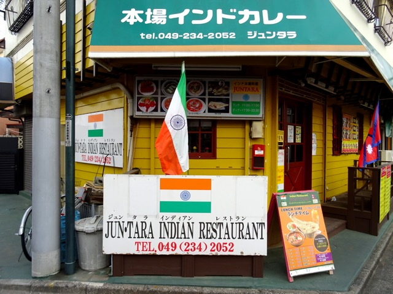
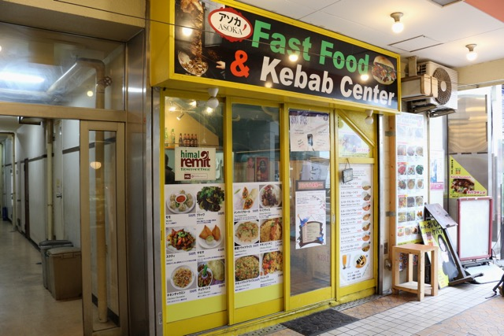

1.
Juntara
Visit ShopJuntara, probably the most popular and well known indian resturant among TIU students. There are hardly any stidents that do not know about this place, and you can very often see after school and during breaks that students go here. They have affordable prices and offer dinner and lunch sets. A must try for curry lovers.
2.
PizzaHut
Visit ShopPizzaHut, being famous in other parts of the world as well, can be found in Kasumigaseki as well. They offer many different pizzas and sides, so there is always something to chose from. Highly reccomended for the pizza lovers of TIU.
3.
Asoka
Visit ShopAnother Indian themed resteurant but with a twist. Asoka also have a fast food & kebab shop and a spices store. So you can buy authentic indian spices for your home cooking. Highly reccomended. Good taste and affordable prices. Their kebab is a must try as well.
